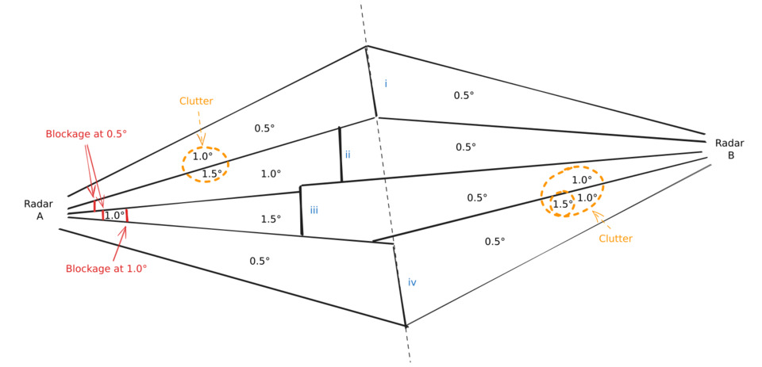
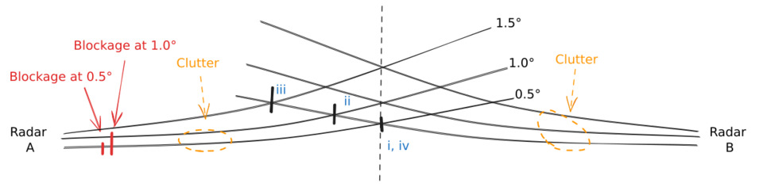
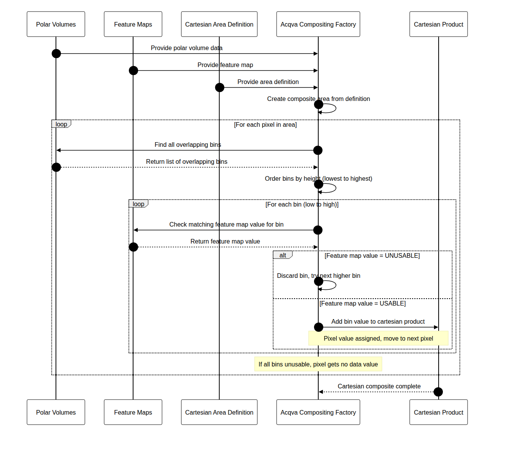

Summary
ACQVA is approaches compositing in a different way where it doesn't use the classic approaches like PPI,PCAPPI,MAX for generating the composites. The basic concept of the algorithm is to assume that lowest measured value always gives the best information unless there is something disqualifying that value which in the case of ACQVA is desribed by featuremaps. This also means that the algorithm only supports polar volumes as indata. The actual ACQVA-algorithm is straight forward and most of the work lies in creating proper feature maps describing what can be used or not.
The feature maps can be determined in various ways, either they can be determined statistically with for example hit counters, topography, observations or any other novel approach as long as they give an indication on what to ignore or use. Since radar scans can differ in geometry (nbins/nrays) the feature maps should contain all possible combinations of geometries for the polar volumes since the feature map is located by using nod, elevation angle, nbins, nrays, rscale, rstart and beamwidth.
A brief explanation on how to see the information in the feature maps:
- All radar data is considered "good" (==1) until we know it is "bad" (==0).
- Any feature (constituent to a radar volume's feature map) is computed independently.
- The feature map is constructed from any number of constituents.
- The resulting feature map is "good" where all constituents are "good", and "bad" elsewhere ("AND"/"multiplicative" logic). Or if one like: The resulting feature map is "bad" where any constituents is "bad" ("OR"/"additive" logic).


Base algorithm
The algorithm navigates over the composite area pixel by pixel. For each pixel all radars that might overlapp that pixel is determined. Then the overlapping bins are ordered by height. The lowest bin in this set is selected and the corresponding feature map bin is determined. If this bin-value has been marked as unusable in the featuremap, then the second lowest bin will be selected and checked in the same way. This will be done for each bin until a bin is marked as usable. If all bins are determined to be unusable the result will be set to nodata.

Feature maps
The feature maps have got their own file format. The file format has been inspired by the ODIM H5 file format but rave provides an API to work with these maps so that the user doesn't need to care about those parts. There are two different object types, AcqvaFeatureMap_t and AcqvaFeatureMapElevation_t. Each AcqvaFeatureMap_t instance contains a number of AcqvaFeatureMapElevation_t:s.
Since the task of creating default feature maps will be quite repetetive, rave provides support for creating the skeleton. All feature maps will be set to '1' which means that everything is assumed to be good.
Creating feature maps
The easiest way to create a featuremap is to use the provided utility function that creates a feature map from a json configuration file that describes the geometry of the wanted radar and then adjust the various feature map elevation fields.
import json, _raveio
from acqva_featuremap_generator import acqva_featuremap_generator
cfg = json.loads("""
{
"longitude": 12.8517,
"latitude": 56.3675,
"height": 209.0,
"nod": "seang",
"scans": [
{"nbins": 480, "nrays": 360, "elangle": 0.5, "rscale": 500.0, "rstart": 0.0, "beamwidth": 1.0},
{"nbins": 480, "nrays": 360, "elangle": 1.0, "rscale": 500.0, "rstart": 0.0, "beamwidth": 1.0},
{"nbins": 480, "nrays": 360, "elangle": 1.5, "rscale": 500.0, "rstart": 0.0, "beamwidth": 1.0},
{"nbins": 480, "nrays": 360, "elangle": 2.0, "rscale": 500.0, "rstart": 0.0, "beamwidth": 1.0},
{"nbins": 592, "nrays": 360, "elangle": 2.5, "rscale": 250.0, "rstart": 0.0, "beamwidth": 1.0},
{"nbins": 592, "nrays": 360, "elangle": 4.0, "rscale": 250.0, "rstart": 0.0, "beamwidth": 1.0},
{"nbins": 592, "nrays": 360, "elangle": 8.0, "rscale": 250.0, "rstart": 0.0, "beamwidth": 1.0},
{"nbins": 592, "nrays": 360, "elangle": 14.0, "rscale": 250.0, "rstart": 0.0, "beamwidth": 1.0},
{"nbins": 480, "nrays": 360, "elangle": 24.0, "rscale": 250.0, "rstart": 0.0, "beamwidth": 1.0},
{"nbins": 480, "nrays": 360, "elangle": 40.0, "rscale": 250.0, "rstart": 0.0, "beamwidth": 1.0}
]
}
""")
featuremap = acqva_featuremap_generator.create_featuremap_from_config(cfg, "seang", "20260101", "20260131")
# Note that the file name is relevant. For now it should always be <5-letter nod>_acqva_featuremap_<year><month>.h5.
# or just <5-letter nod>.h5
#
featuremap.save("seang_acqva_featuremap_202601.h5")
The content of the feature map will be similar to that of ODIM H5 and if you display it, the content will be
/Conventions is an attribute /dataset1 is a group /dataset1/data1 is a group /dataset1/data1/data is a dataset /dataset1/data1/data/CLASS is an attribute /dataset1/data1/data/IMAGE_VERSION is an attribute /dataset1/data1/how is a group /dataset1/data1/how/beamwidth is an attribute /dataset1/data1/where is a group /dataset1/data1/where/elangle is an attribute /dataset1/data1/where/rscale is an attribute /dataset1/data1/where/rstart is an attribute /dataset1/where is a group /dataset1/where/elangle is an attribute ... and so on ....
/Conventions will as of writing this documentation be ACQVA Feature Map 1.0
The location of the featuremaps can be configured in the rave properties object by setting the property "rave.acqva.featuremap.dir". For example by invoking:
properties.set("rave.acqva.featuremap.dir", "/var/lib/baltrad/rave/featuremaps")
Feature map configuration
The feature map configuration file can either be manually created or else an approach where existing volumes are used to create the configuration. This can be very useful if for example there are several different geometries depending on scan schedule or some other reasons for why the geometries are changing. Assuming that you have a number of volumes that you want to merge into one feature map configuration this can be written:
def create_configuration(filenames):
result = None
for f in filenames:
vol = _raveio.open(f, True, None).object
if volume_is_usable(vol): # Check if this volume can be used, like if malfunc == True or any other situations
if not result:
result = acqva_featuremap_generator.create_volum_config_from_volume(tvol)
else:
nextcfg = acqva_featuremap_generator.create_volum_config_from_volume(tvol)
result = acqva_featuremap_generator.merge_volume_config(result, nextcfg)
return result
and if you want to store the configuration you can use the support provided by the json module with or without a custom json.JSONEncoder.
json.dumps(config, indent=2)
Generated by